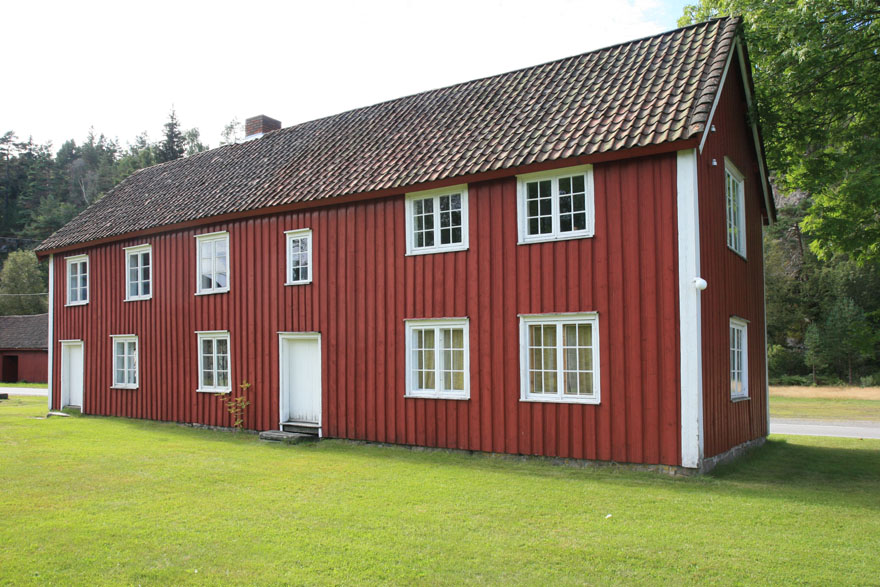
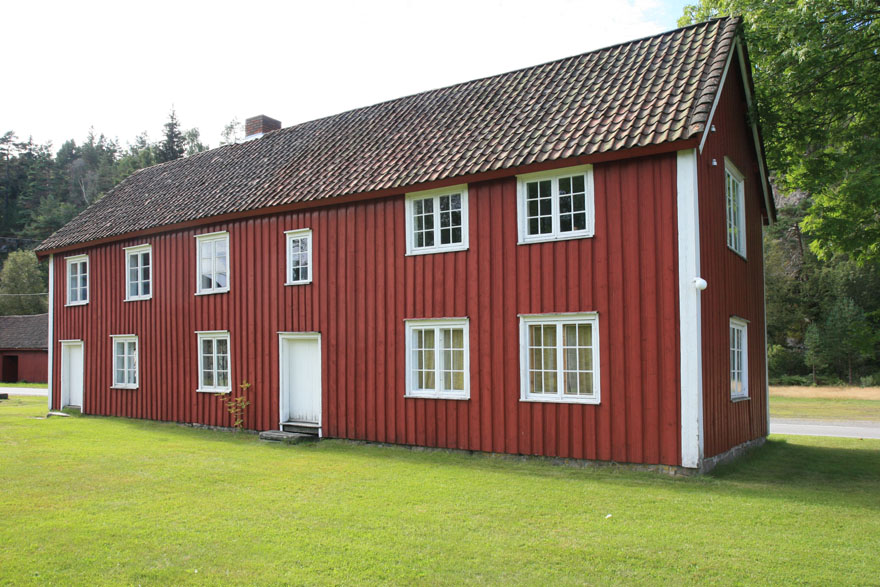

Holt Seminar 1839-1939
Spadestikk i historia - Åndsimpulsar frå Holt Seminar
Tekst: Rune Birkelandz
Foto: Torvald Slettebø, Universitetet i Agder, Seniorsenteret
Rektor Olaf Jansen gav i "Kristiansand Lærerskole" eit verdifullt hundreårsbilete av lærarseminaret for Kristiansand stift. Med dokumentasjon i offentlege skriv og protokollar teikna han eit heilskapsbilete av institusjonen som voks fram. For oss fell det naturleg i høgare grad å fokusere åndsimpulsane i ei fjern peda- gogisk fortid. Med eit bilete frå arkeologien bed artikkel- forfattaren lesaren om å følgje spade og skei ned i avleiringane. Er lykka god, kan vi støyte på pedagogiske pollen som vitnar om fortids voksterliv på Agder.
Relevante spørsmål under spadestikka våre kan vere: a. Kva slag historisk epoke gjennomlevde folket? b. Kva behov melde seg? c. Kva svar måtte Holt seminar gje?
Tida og skolen
I 1839 starta lærarseminaret i Holt. Dei færraste av oss har eit realistisk bilete av den fattige kulturbakgrunnen i samtida. Berre 25 år hadde gått sidan unionsoppløysinga, som kalla nasjonen til sjølvrealisering. Det var 2 år sidan formannskapslovene av 1837 gav grunnlag for eit gryande lokalt sjølvstyre.
Ingen siterte på denne tid Henrik Ibsen. Heller ikkje kunne det skapast høgtid og fest ved Griegs norske dansar. Like nyttelaust ville det vere å kalle på Ivar Aasen eller Vinje, Landstad og L.M. Lindeman.
Leitar vi i boksamlinga frå Holt seminar, ser vi og kor liten brøk av bøkene som der er norske, medan den danske arven ruver, ved sida av tyske og andre nordvest-europeiske innslag.
Allmugeskolen stod heller ikkje sterkt i folks omdømme. Ide- alkravet var ein fast-skole ved kvar "hovudkyrkje". Elles var det omgangsskolar med kort undervisningstid, sparsamt undervisningsmateriell og lærarar som lite pedagogisk rettleiing hadde fått. Holt hadde heldigvis eit positivt tillegg i og med fast-skolen ved Nes jernverk, der kulturpersonlegdomen Jacob Aall hadde ansvaret. Men då Andreas Faye vart innsett som sokneprest i Holt i 1833, heldt biskopen samstundes visitas og gjesta fast-skolen i bygda nær prestegarden, lite glad over det han såg:
"Vil man lære hvorledes en skole ikke skal være indrettet, saa besøge man denne skole. Det er ubegribeligt at en skole som ligger et par 100 skridt fra prestegaarden, kan være saa slet. Jeg paalægger hr. Faye som pligt at have stadigt tilsyn med denne skole ."
Dagen etter måtte Faye som opplysningsinteressert ny prest gå mot folkefleirtalet. Bygda ønskte å redusere undervisningstida i allmugeskolen og halvere lærarlønene, og prosten ville bøye seg for majoriteten. Men Faye hadde sterkaste argument og vann. Eit tilbakeslag for skolen var avparert. Holt kunne 5-7 år seinare bli praksisbygd for offentleg lærarutdannmg.
Då lærarseminaret starta opp i Holt, var allmugeskolen i all hovudsak ein kyrkjeskole. Røtene sine hadde han i den 100 år gamle konfirmasjonsforordninga av 1736 og forord- ninga av 23. januar 1739 om allmugeskolen på landet. At soknepresten hadde eit hovudan- svar, kling tydeleg igjennom i biskop Matthias Sigwardts formaning til Faye, som vi har sitert ovanfbr. Men i lengda kunne ikkje innhaldet i den norske allmugeskolen avgrensast til det strengt religiøse. Nasjonale tankar gjorde seg etter kvart sterkare gjeldande i landet. Og Hans Andreas Faye var styrar av Holt seminar dei 22 første åra etter 1839. Før han 31 år gamal kom som sokneprest til Holt i 1833, hadde han etter det teologiske studiet vore lærår ved bor- garskolen i Arendal og arbeidd med historie- lærerbøker, personalhistorie. og folklore.
Nielsen Hauge hadde ved sida av den religiøse verksemda si også førebudd økonomisk, sosial og politisk aktivitet i breie lag av folket. Tida låg open for ei menneskeleg og nasjonal vekking med religiøst forteikn.
Ein sterk åndsimpuls kom til Norden med romantikken. For vårt land fekk det mykje å seie at den prestegenerasjonen som dominerte i tiåra rundt 1840-50, hadde teke imot mange Grundt- vig-impulsar. Desse kom på det dogmatiske feltet, der l. og 3. trudomsartikkelen talde sterkare med i eit samla credo. Men det galdt og sakramenta, som fekk større plass i folkekyrkja. Det historiske perspektivet gav meining til oppsedingskristendom og tradisjon. Når desse prestane måtte ta del i kunnskapsformidling som gjekk ut over rein kristendomskunnskap, vart ikkje dette noko problem for dei.
For den einskilde vart målet å kunne vere "som han sprang i Guds tanke frem!" For folket måtte noko liknande gjere seg gjeldande: Å finne fram til den gudgjevne eigenart. I dette ånds- arbeidet måtte skolen finne sin plass.
Andreas Faye var styrar av Holt seminar dei 22 første åra etter 1839. Før han 31 år gammal kom som sokneprest til Holt i 1833, hadde han etter det teologiske studiet vore lærar ved borgarskolen i Arendal og arbeidd med historielærebøker, personalhistorie og folklore. I 1833 brøytte han veg for mykje av det nye som var i emning, med å gje ut "Norske Folkesagn". Då hadde han på førehand ute i Europa møtt ei rekke representantar for nyare straumdrag i tida.
I åra framover vart det brevveksling mellom Faye og nye samlarar som Jørgen Moe og P.Ch. Asbjørnsen. Alt tidlegare hadde Faye vore med å grunnlegge Arendal museum og bibliotek. Han tok med seg desse kultur-interessene då han flytte til Holt.
Ved sida av oppgavene som sokneprest og som sosial-politisk engasjert seminarstyrar i Holt vart det likevel det historiske arbeidet som kom til å beslaglegge mest fritid og mange natteti- mar for Faye. Gjennom ein tiårsperiode fram til Jacob Aall døydde i 1844, er samarbeidet mellom desse to eit særsyn i norsk kulturhistorie. Det var på denne tid at Jacob Aall gjorde ferdig ei meir folkeleg omsetting av "Heimskringla" og dessutan sagaene om kongane Sverre og Håkon Håkonsson. Det var til Faye han overlet å skrive forord og gje ut siste delen av verdifulle "Erindringer som bidrag til Norges historie fra 1800-1815". "... og mangen uinternat brændte lampen ned i det fornemme bibliotek paa Nes jernverk inden den gamle herre fulgte presten til slæden og siden fra vinduet lyttet til dombjellernes hendøende velklang."
Fayes faglege bakgrunn var det teologiske studiet i 1820-åra. Dette fall i ei tid då universitetslærarane tok markert avstand frå rasjonalismen, hadde sympati for Gnmdtvig og kjende seg heime i eit historisk bibelsyn. Derfor fall det og naturleg for Faye å møte som repre- sentant på dei to første skandinaviske kyrkjemøta (Kø- benhavn 1857, Lund 1859). Der vart det historiske perspektivet sterkt understreka. På første møtet tala Grundtvig sjølv om "det levende Ord". Faye var ein av dei norske som bar fram helsing til den danske åndshøvdingen.
Andreas Faye og Holt seminar
Då Kyrkje- og undervisningsdepartementet valde stad for eit lærarseminar på Agder, knytte dette seg også saman med personvalet. På grunn av Fayes kvalifikasjoner la departementet seminaret til Holt. Men korleis skulle Faye på best mogeleg måte få nyttiggjort bakgrunnen sin i skolearbeidet?
Eit av spadestikka våre hamnar i ei lærebok: "Almueskolen eller vink til at opdrage og undervise børn" (1853). Faye skriv der bl.a. at så sentralt som kristendomsundervisninga står i allmugeskolen, er det ei viktig sak å finne fram til føremålstenleg underviseningsform: "At give de smaa uden videre katechisnien eller endog Pontoppidans forklaring eller en anden lærebok ihende og nøde dem til - ofte under taarer - at pugge udenad noget som de aldeles ikke forstaae, er vel en ikke sjelden, men forkastelig maade at underuise paa."
Barn i sitt sjuande år skjønar ikkje endå bokspråket. Heller ikkje er katekisasjonar vegen. Nei, "religionsunderuisningen for sma- abørn bør stedse være mundtlig, derhos liulig, fattelig, anskuelig og afvexlende, idet læreren snart fortæller, snart taler med bør- nene om det fortalte, snart prøuer om de fatte og mindes det meddelte." Faye tok rett nok ikkje til orde for å avskaffe Pontoppidans forklaring. Likevel er undervisningslæra hans revolusjonerande tenking om kristendomsformidling til barn. Ikkje slik å forstå at Faye var den første som var inne på nye undervisningsideal, eller at han i vårt land stod aleine. Men som prest og praktisk skolemann med filosofisk skolering nytta han på ein særleg fruktbar måte tilfang frå mange kjelder. Under omskapingspro- sessen i allmugeskolen vart han ein katalysator som tida og skolen trong. Og han hadde stor nok autoritet til å bli høyrd.
Impulsen Irå Ole Vig
Det var frå 1852 at Ole Vig gav ut tidsskriftet "Den norske folkeskole", organet som i klårform artikulerte dei pedagogiske ideeane frå Grundtvig, 6tilpassa norske forhold. På mange måtar stimulerte Vig og tidsskriftet hans ei nasjonal-romantisk vekkjingsbølgje her i landet.
Nettverket av impulsar som førte til reform i skolen, kan til ein viss grad kartleggast. Særleg viktig har tidsskrift-arbeidet vore. Der melde nybrotstankane seg med engasjement og flittig gjentak - særleg når det var eit vanemønster i undervisninga som dei pedagogisk vakte ønskte å bryte.
Ole Vig var hovud-redaktør av to publikasjonar: Opplysings- skriftet "Folkevennen" frå 1852 og det pedagogiske skriftet "Den norske folkeskole" frå same året. Ved Ole Vigs død i 1857 veit vi at "Folkevennen" hadde 2972 abonnentar (i 1861 ca. 4000), alle ordna prostivis og med namn.7 Under Holt prestegjeld med Tvedestrand by finn vi 16 abonnentar, av dei "sogneprest A. Faye, kirkesanger A. Feragen, jemverkseier N. Aall, Holt skolelærer- forening og Holt skolelærerseminarium".
"Den norske folkeskole" nådde opp i 700 abonnentar i Ole Vigs periode [l 852-56], medan det i Feragens redaktørtid (1858-64) nådde 1100, også dette tidsskriftet hadde mange kollektive lesa- rar/tingarar'8 Berre sporadisk kjenner vi namnet på tingarane til dette siste tidsskriftet. Men sidan målgruppa først og fremst er dei skoleansvarlege, undrar det oss ikkje at seminarbiblioteket på Holt har "Den norske folkeskole". Seinare, etter Ole Vigs død, forer to lærarar frå seminaret redaktørstafetten vidare (Feragen og Bergh). I Kristiansand off. bibliotek har dei eit eksemplar av tidsskriftet antikvarisk etter ein tredje lærår ved seminaret (P.A. Skjefveland).
I dei første årgangane av "Folkevennen" viser Ole Vig til det parallelle tidsskriftet "Budstikken", som den danske grundtvigia- narpresten F. E. Boisen gav ut i Slesvig, særleg når ein skulle arbeide for "det levende Ord" og "bibel-fortelling forst" og "moders mål som til hjertet går".
Feragen og Bergh
Andreas Feragen tok eksamen ved Holt seminar i 1843, og vart tre år deretter kyrkjesongar i Holt. Han bygde då opp øvingsopp- læringa for seminaristane, og "tør regnes som en av det 19. århundredes mest fremskutte, for ikke å si den mest fremskutte representant for de seminaristutdannede lærere i den norske folkeskole".9
Gerhard Gunnerus Bergh var teolog med sterke musikalske interesser, frå 1858-62 andrelærar ved Holt seminar.
Då Ole Vig døydde og Feragen og Bergh tok over redigeringa av "Den norske folkeskole", var det tydeleg at dei ville følgje Vigs pedagogiske linje. Som Vig hadde dei fast tilgjenge til det danske "Budstikken" og henta inspirasjon derifra.
Som Faye er Feragen oppteken av den pedagogiske forteljinga
"Vi vil begynde Kristendo msunderuisn.in.gen med bibel- ske fortællinger? Ikke sandt? Vi uilforetrække dem for de saakaldte katekisasjoner, der har tilformaalpaa tysk fornuftig vis at udpine of barnets egen hjerne gjennom mange spørgsmaal og vendinger det, der ligger lysleven- de aabenbaretfor os i Guds hellige Ord. Ja, det vil vi, og ikke i vorforstandighed bære os ad som den vise, der ved høilys dag gik med lygte midt iblandt folke vrimmelen for at opsøge et menneske."
Katekisasjonen skal nok komme til sin rett, skriv Feragen, men vi skal ikkje misbruke den til å keie barna og plage oss sjølve. Når barna seinare får bibelhistorisk bok i hand, bør ikkje dette sikte mot ordrett utabokslæring, enda om språkføringa kan vere folkeleg. "Det er let at indse," skriv han, "at en gjengivelse av fortællingen med egne ord dog altid er den sikreste borgen for at barnet virkelig har tilegnet sig historien, og ei blot lært en sammenhængende ordrække udenad."
I perioden 1858-64 (Feragen/Berghs redaktørtid) gjev tids- skriftet materiale til å vurdere det pedagogiske miljøet ved Holt seminar. Ikkje berre er det to av lærarane ved seminaret som gjev profil til tidsskriftet gjennom ein 6-7-årsperiode, men andre kjelder viser at fleire av lærarane fell inn i same pedagogiske toneart: ... .
Leiaren av seminaret 1839-61, Andreas Faye, er nemnd tidle- gare. Vidare fell det naturleg å tenkje på teologen Christian Grønbeck Døderlein (andrelærar ved seminaret 1846-56, seinare styrar av Asker seminar). Den landskjende seminareleven hans frå Holt-perioden, stortemplaren i I.O.G.T. Torjus Hanssen, skriv i utrykte memoarar om grundtvigske synspunkt som han har teke med seg vidare i livet, og som han glad takkar Døderleins klare undervisning for.
Som reformpedagog visste Feragen at konservativ holdning hos foreldre bremsa fornyinga i skolen. Mønsteret i eigen skolegang kjende dei, og dette kunne dei lettast støtte og føre vidare hos barna. Men det same gjorde seg og gjeldande hos lærarar som med liten kunnskap kopierte si eiga skolefortid. Spørjing og høyring ut frå ei hjelpebok berga mang ein hjelpelaus omgangs- skolelærar gjennom kvardagen. Feragen/Bergh sørgde i denne situasjonen for å la tidsskriftet "Den norske folkeskole" verte engasjert på alle felt der prestisjen til læråren og skolen burde styrkast. Det galdt å få lærarar med skikkeleg utdanning for yrket. Det vart skrive om lærarløner som måtte aukast, skolelo- kale som måtte bli meir tiltalande og formålstenlege. Dei kravde at undervisningsmidlane måtte betrast, at boksamlingar vart bygde opp osb. I nærmiljøet sitt gjorde redaktørane personlege framstøyt, formidla så resultatet til lesarane og tok seinare inn rapportar frå andre distrikt.
Skulle ein nå fram med reformer, var det mange samarbeids- vegar ein kunne gå. Ikkje minst viktig måtte det vere å utvikle eit godt samarbeid mellom skole og heim. I programartikkelen i første nummeret sitt (1858) presiserer Feragen at det er "opdrag- elsen i hjemmet og skolen vort blad vil dreie sig om, og om den sag vil vi gjerne tale til og med hverandre, vi som dele arbeide og ansvar med hensyn til børneundervisningen, vi mene foreldre, børnelærere og præster."
I ein artikkel same året om "den første undervisning i læsning" gjev Feragen indirekte eit levande bilete av kontakten mellom skole og heim:
"Når jeg efter endt skoletid om eftermiddagen toger en tiden fodtur, ser jeg undertiden ind snart til en, snart til en anden of mine skolebarns foreldre."
Føremålet er ein prat om barna og læringsprosessen. Konkret tek han oss med på besøk til ei husmannsfamilie, der ei jente i førskolealder - pressa av den lese-fiinke mora - sit og strevar med bokstavane. Gjennom ein dialog mellom lærår og mor blir det kasta lys over gammal og ny lesemetodikk, og eit lystbetont samarbeid tek form, der også far til jenta kan bli med.
Alt i 1847 - eitt år etter at Feragen kom til Holt som lærår og kyrkjesongar - var han hovudmann i stiftinga av eit lærarlag i bygda, og sytte også for eit felleslag av lærarar i prostiet.
"Den norske folkeskole" gjev ei rekke referat frå lærarmøte på Agder og rundt i landet. Her får ein avgjort det inntrykket at Feragen også på dette feltet medvite fører vidare Ole Vigs skole- politiske aktivitet. I dei sju årgangane til Feragen får lesarane langt over hundre "skole-efterretninger", også med utanlandske innslag. Og i same perioden finn vi referat frå eit halvt hundre "skolelærerforhandlinger". Såleis gjev tidsskriftet i 1858 fyldig referat frå eit stift-lærarmøte i Kristiansand, der Feragen er ordstyrar. Sentralt står diskusjonen om kristendomslærebøker og lesebøker.
Dette var 5 år før Jensens lesebok låg føre, og der Feragen var Jensens medarbeidar. Det har i ettertid ofte vore smilt over skolestyre som innførte P.A. Jensens "Lesebog for Folkeskolen og Folkehjemmet" (1863) etter at eventyra var overklistra. I 1864 gjev Feragen ei fyldig positiv vurdering av publikasjonen "Aske- ladden". Dette er ei samling av utvalde eventyr og segner for barn som tre lærarar gav ut. to av desse tidlegare seminaristar frå Holt.
Feragen viser til modningsprosessen hos barn. Prøv deg med ei såkalla "forstandsøving" på eit 5-6 år gammalt barn, med logisk resonnement om årsak og verknad, og det heile fell dødt til jorda, medan det motsette skjer når du matar barnefantasien med forteljing ....
"om. blomstene på marken, hvorledes de venligt bukke til hverandre, ser op mod himmelen og smiler; fortæl om trær og jugler, om livet i skog, i mark og enge, giv tingene Uv, lad blomst, trær og fugler tale med hverandre, lad bekken danse og le, lad granskogen sukke når høstvinden går over den..." I "Tilbagesyn paa mit liv" fortel Feragen om dei spartanske tilhøva på fast-skolen i Holt då han i 1846 overtok posten. Som eine-lærar måtte han delvis nytte den såkalla innbyrdes under- visningsmetoden, der dei vidarekomne barna etter tur vart nytta som medhjelparar. Til 70 barn hadde han eit rom som var 19 fot langt, 151/2 fot breitt og 7 1/2 fot høgt!
"Skjøntjeg meget snartfik. anbragt en aabning med lem i toget, og ventiler i et par vinduesruder, blev dog ofte luften såa kvalm ogjuld of damp at det randt ned ad væggene og drypped aftaget, og naar døren aabnedes, stod der ud gov som afetj]øs." Etter eit slikt fireårig dampbad, lykkast det for Feragen med ivrig støtte frå Faye å få skolekommisjonen (skolestyret) med på ei monaleg utviding. Men då var elevflokken rett nok auka til 80!
Spadestikk i historia
Inkje under at "Den norske folkeskole" måtte ta opp skolebygg- saka generelt, og at dette gjekk såman med arbeidet for å få fleire fast-skolar. Argumenta var at det ville stimulere tilgangen på kvalifiserte lærarar, og at det ville lette arbeidet med å få betre undervisningsmidlar. når ein ikkje trong å flytte det frå stad til stad. Inn i denne samanhengen går og Feragens iver etter å få oppretta boksamlingar ved fast-skolane.
Skoleboksamlingar og etterutdanning
I 1858 skriv ein innsendar om "nytten af et børnebibliotek i forbindelse med almueskolen." Han har konstruktive tankar. Eit variert utval av bøker må stimulere barna og også etter skoleal- deren gjere dei glade i å lese. Han avsluttar innlegget med eit framlegg på 50 eksemplar. Feragen utdjupar deretter ideen med eigne røynsler. Han fortel konkret om opptaket sitt til skolebok- samling i Holt to år tidlegare. Der har foreldra samla inn pengar - til eit første innkjøp. Nokre år seinare kan Feragen melde om nye bokinnkjøp. Tiltaket har vore ein stor suksess. For framtida skal derfor den offentlege skolekassa yte fast tilskot til drift og innkjøp av bøker til skoleboksamlinga. Så ofte det byd seg naturleg høve, trykker Feragen liste over bøker som er innkjøpte og gaver boksamlinga har fått. Meldingar frå andre kantar av landet tek han og inn i tidsskriftet for å stimulere saka.
Noko seinare skriv Feragen om "Skolelærerens bogsamling". Han peikar på dei store folkeopplysnings-oppgåvene som skolen har, kor viktig det er for læråren å utvide kunnskapane sine på dei ymse fagområde, men og å vinne betre psykologisk og peda- gogisk innsikt, både gjennom lesing og røynsle i arbeidet med barn.
Når no Feragen i 1863 set opp ei fyldigare og oppdatert bokliste, tenker han særleg på den delen (over halvparten) av den norske allmugelærarstanden" som ikke har modtaget sin uddannelse ved vore stiftseminarier". Frå desse lærarane har Feragen fått vedva- rande oppmodingar om hjelp. Og det blir ei fyldig rettleiing han kjem dei i møte med.
I same årgangen (l 863) fører Feragen vidare tanken om etterut- danning for lærarane ved artikkelen "Et middel til læreres videre uddannelse for sit kald". I lærarmøte for Christiania stift har deltakarar m. a. teke til orde for påhøyring. Lærarar i arbeid må få korrektiv ved å observere den undervisninga andre gjev. Det er derfor stor skade, skriv Feragen, at ein er nekta løyve til å nytte eit slikt middel:
"Hvorfor henstivner saa mangen lærer i tilvante former, forfal- der til pedanteri og ubøielighed.ja ikke sjelden, uden at vide af det, til vanner og egenheder, der er baade utækkelige og steden- de? Fordi de bestandig - aarfor aar - bare høre og se sig selv og aldrig faa leilighed til at overvære andre læreres undervisning i skolen."


 
